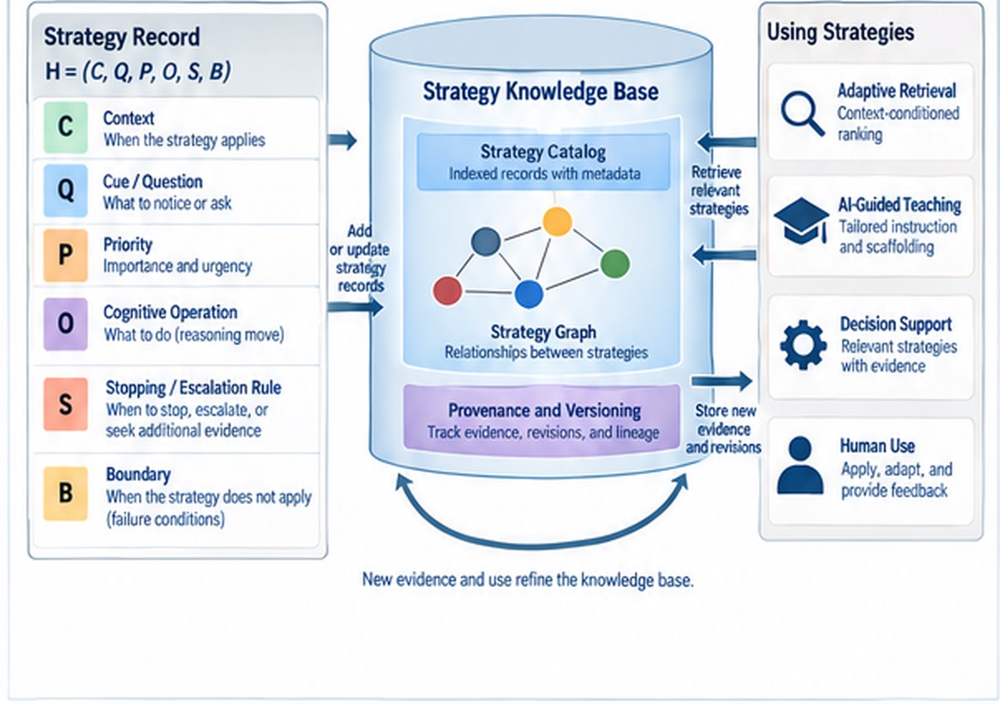

Consulting
Work together
Helping organizations apply modeling and human–AI methods to real-world challenges.
The engagement is practical. We make the represented world inspectable, keep competing explanations visible, and test before a claim hardens into action. Computation stays accountable to evidence and uncertainty.
Where the work usually starts


What an engagement can include
- Decision framing Turn a messy situation into an inspectable domain: observations, provenance, timing, and uncertainty.
- Competing explanations Keep alternatives explicit long enough for evidence and tests to matter.
- Experimental comparison Design paired or controlled tests that separate claims without overclaiming.
- Validation and memory Separate discovery from confirmation, and leave an auditable record the next team can use.




Case studies